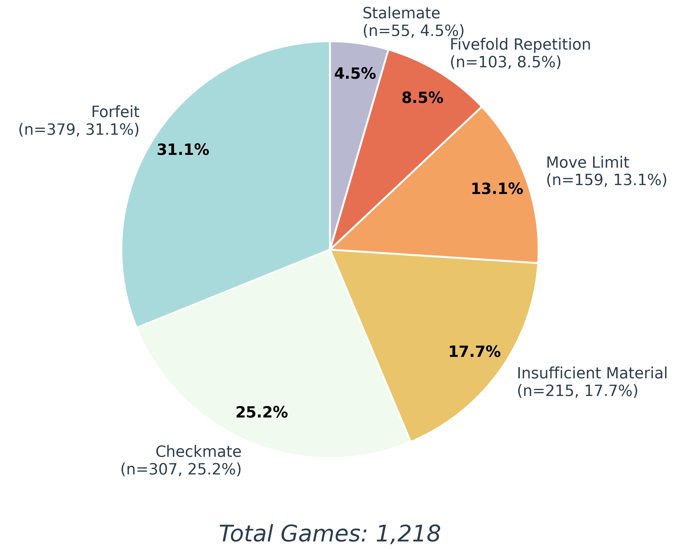

Abstract
Recent large language models (LLMs) have shown strong reasoning capabilities. However, a critical question remains: do these models possess genuine reasoning skills—particularly complex strategic reasoning—or are they primarily excelling at sophisticated pattern recognition within their training data? To address this question, this paper presents a chess testbed, ChessArena, to evaluate the strategic reasoning capabilities of LLMs. Chess requires complex strategic reasoning ca- pabilities including long-term planning, strict rule comprehension, and multi-turn conversation memorization. Specifically, ChessArena is a competitive framework where LLMs play against each other, under four different play modes. The testbed is equipped with a ranking algorithm and a leaderboard. The testbed can also eval- uate fine-grained capabilities including basic understanding, move selection, and puzzle solving. Over 13 LLMs with different modes are evaluated in ChessArena, playing over 800 games. The results reveal significant shortcomings in current LLMs: no model can beat Maia-1100 (a chess engine at human amateur level), while some even failed to defeat a random player that selects moves arbitrarily. We also present a strong baseline to the testbed: our fine-tuned Qwen3-8B substantially improved performance, approaching much larger state-of-the-art reasoning models.
Overview
ChessArena is a competitive arena for Large Language Models (LLMs) constructed through model-versus-model gameplay. By having LLMs play against each other like humans, we can evaluate their strategic reasoning, instruction compliance, and multi-turn conversational memory—capabilities that play a crucial role in today's LLMs. Following Lichess, we offer four distinct play modes, allowing models to engage in diverse matches. Furthermore, to assess the gameplay abilities of models more comprehensively, we have designed three fine-grained evaluation tasks: Basic Understanding, Move Selection, and Puzzle Solving. We found that many models cannot even defeat a random player, and no model has been able to surpass Maia-1100 (a human-like chess engine). This indicates significant room for improvement in strategic reasoning among LLMs. By distilling data from powerful models in ChessArena and applying post-training (SFT+RL) based on Qwen3-8B, we have established a strong baseline model within ChessArena. In summary, we have launched the ChessArena benchmark—a chess platform that supports LLMs competing against each other under various settings. To submit your model, please use the interface below.
Key Features
♟️ Competition Sampling
Automated matching system based on Glicko formula that pairs players with similar skill levels for faster rating convergence.
📊 Glicko-1 Rating System
Robust rating calculation system for comprehensive model evaluation and comparison across different configurations.
🎯 Fine-grained Evaluation
Three specialized tasks: basic understanding, move selection, and puzzle solving to identify specific failure modes.
🏋️ Training Pipeline
Complete training framework with SFT and RL stages, including trained models and datasets on HuggingFace.
Four Game Modes
We introduce four distinct game modes with different evaluation focuses. Each mode presents unique challenges and is suitable for different types of models:
⚡ Bullet Mode
Lightning Fast
Models receive the current board state (FEN) and must output moves (UCI or SAN) directly without any thinking process.
Suitable for: Non-thinking models
⚡⚡ Blitz Mode
Quick Thinking
Models receive the current board state and are allowed to think before outputting moves.
Suitable for: Non-thinking models
🎯 Standard Mode
Deep Thinking
Models receive the current board state and can perform long Chain-of-Thought (CoT) reasoning before outputting moves.
Suitable for: Thinking models
🎭 Blindfold Mode
Most Challenging
Move history is provided through multi-turn dialogue. Models must reconstruct the board from move history and think before outputting moves.
Suitable for: Both Thinking and non-thinking models
These four game modes have different evaluation focuses, with Blindfold being the most difficult mode as it requires models to maintain mental board representation.
Leaderboard Results
Through over 1,000 games, we established a comprehensive leaderboard evaluating various LLMs. Key findings include:
- Thinking models generally outperform non-thinking models
- All models are inferior to Maia-1100 (a chess-specific model)
- In ChessArena, our Qwen3-8B-Chess is a relatively strong baseline.
| Rank | Model | Mode | Legal Moves | Rating | RD | 95% CI | Games |
|---|---|---|---|---|---|---|---|
| 1 | Maia-1100 | - | ✗ | 2220 | 82 | (2058, 2382) | 44 |
| 2 | O3 | Standard | ✗ | 1948 | 78 | (1793, 2101) | 28 |
| 3 | Doubao-Seed-1-6-Thinking | Standard | ✓ | 1830 | 50 | (1729, 1929) | 60 |
| 4 | Gemini-2.5-Pro | Standard | ✓ | 1819 | 81 | (1659, 1979) | 18 |
| 5 | Qwen3-8B-Chess (baseline) | Blitz | ✓ | 1776 | 93 | (1593, 1959) | 16 |
| 6 | Doubao-Seed-1-6-Thinking | Standard | ✗ | 1743 | 66 | (1612, 1873) | 36 |
| 7 | GPT-4.1 | Blindfold | ✓ | 1699 | 50 | (1601, 1797) | 60 |
| 8 | Doubao-Seed-1-6-Thinking | Blindfold | ✓ | 1687 | 73 | (1542, 1831) | 24 |
| 9 | GPT-4.1 | Blitz | ✓ | 1686 | 50 | (1588, 1784) | 182 |
| 10 | Claude-3.7-Sonnet | Blitz | ✓ | 1654 | 50 | (1555, 1751) | 74 |
| 11 | Claude-3.7-Sonnet | Blindfold | ✓ | 1625 | 66 | (1493, 1756) | 30 |
| 12 | GPT-4.1 | Blitz | ✗ | 1623 | 50 | (1525, 1721) | 106 |
| 13 | Gemini-2.5-Pro | Standard | ✗ | 1616 | 74 | (1469, 1762) | 28 |
| 14 | Seed-Coder-8B-Chess | Blitz | ✓ | 1614 | 63 | (1490, 1738) | 30 |
| 15 | Qwen3-8B-SFT-Stage2 (Ours) | Blitz | ✓ | 1612 | 56 | (1501, 1721) | 40 |
| 16 | Claude-3.7-Sonnet | Blindfold | ✗ | 1588 | 72 | (1445, 1729) | 28 |
| 17 | GPT-4.1 | Bullet | ✓ | 1583 | 50 | (1485, 1681) | 54 |
| 18 | DeepSeek-V3 | Blitz | ✓ | 1553 | 50 | (1454, 1650) | 174 |
| 19 | Random Player (Weak baseline) | - | ✓ | 1524 | 50 | (1425, 1621) | 284 |
| 20 | Qwen3-235B-A22B | Blitz | ✓ | 1483 | 50 | (1385, 1581) | 146 |
| 21 | DeepSeek-V3 | Blitz | ✗ | 1482 | 58 | (1367, 1597) | 48 |
| 22 | DeepSeek-V3 | Blindfold | ✓ | 1437 | 75 | (1290, 1584) | 24 |
| 23 | DeepSeek-V3 | Bullet | ✓ | 1382 | 80 | (1224, 1540) | 22 |
| 24 | Qwen3-235B-A22B | Bullet | ✓ | 1369 | 54 | (1261, 1476) | 46 |
| 25 | Qwen3-8B | Blitz | ✓ | 1335 | 65 | (1205, 1463) | 32 |
| 26 | Seed-Coder-8B-Instruct | Blitz | ✓ | 1009 | 106 | (800, 1218) | 30 |
Note: RD = Rating Deviation; 95% CI = 95% Confidence Interval; ✓ = Legal moves provided; ✗ = No legal moves provided
Distribution of terminations
This figure displays all game termination conditions—including checkmate, forfeit, move limit draw, and others—offering better understanding of the models' playing behavior.

🎯 Fine-Grained Evaluation
Observing the issues models encountered in the main chess competitions, we designed three fine-grained evaluation tasks to analyze specific weaknesses:
- Basic Understanding: Assesses the model's fundamental comprehension of the chessboard state.
- Move Selection: Evaluates the model's single-step move choice ability.
- Puzzle Solving: Tests the model's capability to solve multi-step chess puzzles (tactical reasoning).
The specific results for these tasks are detailed below.
1. Basic Understanding
| Model | PMA (%) | Precision (%) | Recall (%) |
|---|---|---|---|
| GPT-4.1 | 98.0 | 89.3 | 92.1 |
| O3 | 98.5 | 98.5 | 98.5 |
| DeepSeek-V3 | 97.0 | 81.8 | 75.3 |
| DeepSeek-V3.1 | 89.0 | 87.5 | 87.4 |
| DeepSeek-R1 | 100.0 | 99.2 | 98.4 |
| Doubao-1-5-Pro-32k | 76.0 | 50.6 | 56.2 |
| Doubao-1-5-Lite-32k | 51.5 | 33.3 | 30.3 |
| Doubao-1-5-Thinking-Pro | 99.5 | 98.0 | 98.0 |
| Doubao-Seed-1-6-Thinking | 100.0 | 99.9 | 99.9 |
| Qwen3-235B-A22B | 80.5 | 50.7 | 49.3 |
| Claude-3.7-Sonnet | 98.0 | 87.6 | 87.3 |
| Gemini-2.5-Pro | 100.0 | 98.5 | 96.7 |
| Qwen3-8B | 36.0 | 14.1 | 18.8 |
| Qwen3-8B-Chess-SFT-Stage1 | 63.5 (+31.5) | 20.6 (+5.9) | 29.5 (+14.3) |
| Qwen3-8B-Chess-SFT-Stage2 | 70.5 (+7.0) | 51.9 (+31.3) | 45.3 (+15.8) |
| Qwen3-8B-Chess (SFT+RL) | 79.0 (+8.5) | 52.6 (+0.7) | 50.1 (+4.8) |
2. Move Selection
| Mode | Model or Engine | With Legal Moves | Without Legal Moves | ||||
|---|---|---|---|---|---|---|---|
| LR (%) | TR (%) | MAR (%) | LR (%) | TR (%) | MAR (%) | ||
| Blitz | Random Player | 100.0 | 14.8 | -1.1 | / | / | / |
| Maia-1100 | / | / | / | 100.0 | 78.3 | +107.6 | |
| GPT-4.1 | 97.5 | 25.9 | +20.5 | 71.6 | 29.3 | +6.2 | |
| Claude-3.7-Sonnet | 99.6 | 26.1 | +25.6 | 68.4 | 18.2 | -17.7 | |
| DeepSeek-V3 | 99.1 | 18.5 | +10.7 | 64.5 | 12.9 | -27.7 | |
| DeepSeek-V3.1 | 93.4 | 26.7 | +18.6 | 63.7 | 16.9 | -23.6 | |
| Qwen3-235B-A22B | 89.8 | 24.9 | +29.0 | 64.2 | 17.0 | -25.3 | |
| Qwen3-8B | 96.2 | 13.4 | +1.8 | 9.8 | 2.1 | -79.5 | |
| Qwen3-8B-Chess-SFT-Stage1 | 86.8 | 13.6 | -9.6 | 15.1 | 2.6 | -74.9 | |
| Qwen3-8B-Chess-SFT-Stage2 | 96.9 | 23.4 | +15.1 | 66.3 | 13.3 | -22.1 | |
| Qwen3-8B-Chess (SFT+RL) | 92.9 | 40.2 | +41.1 | 87.6 | 20.2 | -1.2 | |
| Seed-Coder-8B-Instruct | 59.3 | 8.5 | -36.1 | 4.5 | 1.0 | -85.4 | |
| Seed-Coder-8B-Chess(SFT+RL) | 99.5 | 29.5 | +35.7 | 85.1 | 12.4 | -9.0 | |
| Bullet | GPT-4.1 | 98.7 | 25.0 | +20.8 | 74.0 | 28.7 | +5.7 |
| Claude-3.7-Sonnet | 98.6 | 22.5 | +16.8 | 75.2 | 17.9 | -9.4 | |
| DeepSeek-V3 | 98.9 | 18.8 | +11.3 | 66.2 | 13.3 | -21.8 | |
| DeepSeek-V3.1 | 80.6 | 16.1 | -8.0 | 56.3 | 12.7 | -35.7 | |
| Qwen3-235B-A22B | 95.9 | 17.8 | +4.5 | 69.1 | 15.9 | -18.5 | |
| Standard | DeepSeek-R1 | 100.0 | 32.7 | +34.7 | 82.5 | 23.7 | -1.0 |
| Doubao-1-5-Thinking-Pro | 99.7 | 32.9 | +35.4 | 78.0 | 24.8 | +3.0 | |
| Doubao-Seed-1-6-Thinking | 99.8 | 39.1 | +53.7 | 90.7 | 36.0 | +32.0 | |
| Gemini-2.5-Pro | 99.4 | 37.6 | +46.5 | 85.5 | 40.5 | +36.5 | |
| O3 | 99.6 | 58.7 | +80.1 | 98.0 | 62.0 | +80.2 | |
| Blindfold | GPT-4.1 | 96.8 | 20.1 | +12.7 | 72.7 | 20.2 | +1.2 |
| Claude-3.7-Sonnet | 98.2 | 23.9 | +21.5 | 77.3 | 18.9 | -9.1 | |
| DeepSeek-V3 | 95.1 | 19.2 | +16.2 | 78.5 | 14.9 | -7.8 | |
| DeepSeek-V3.1 | 96.5 | 26.0 | +27.2 | 66.0 | 13.7 | -18.0 | |
| DeepSeek-R1 | 94.7 | 22.7 | +14.0 | 44.6 | 10.9 | -36.9 | |
| Qwen3-235B-A22B | 96.1 | 19.9 | +17.4 | 75.3 | 17.2 | -10.4 | |
| Doubao-Seed-1-6-Thinking | 97.8 | 32.1 | +36.5 | 43.6 | 12.9 | -30.5 | |
| Gemini-2.5-Pro | 98.7 | 30.4 | +23.5 | 68.7 | 21.5 | -8.7 | |
| O3 | 98.4 | 46.9 | +63.2 | 86.9 | 43.5 | +50.9 | |
3. Puzzle Solving
| Model or Engine | Puzzle Solving Accuracy (%) | |||||||
|---|---|---|---|---|---|---|---|---|
| 200-600 | 600-1000 | 1000-1400 | 1400-1800 | 1800-2200 | 2200-2600 | 2600-3000 | Overall | |
| Stockfish (Depth=20) | 100.0 | 100.0 | 100.0 | 100.0 | 99.3 | 97.9 | 91.5 | 98.4 |
| Maia-1100 | 98.6 | 97.2 | 91.6 | 82.5 | 72.7 | 51.0 | 28.2 | 74.6 |
| Random Player | 1.4 | 1.4 | 2.1 | 0.0 | 0.0 | 0.0 | 0.0 | 0.7 |
| GPT-4.1 | 18.9 | 14.0 | 8.4 | 4.9 | 1.4 | 2.8 | 0.0 | 7.2 |
| Claude-3.7-Sonnet | 18.2 | 16.1 | 4.9 | 4.2 | 5.6 | 1.4 | 0.0 | 7.2 |
| DeepSeek-V3 | 11.9 | 7.7 | 2.1 | 0.7 | 0.0 | 0.7 | 0.0 | 3.3 |
| DeepSeek-V3.1 | 13.3 | 10.5 | 8.4 | 4.9 | 1.4 | 2.8 | 7.0 | 6.0 |
| Qwen3-235B-A22B | 24.5 | 18.2 | 9.8 | 5.6 | 4.2 | 1.4 | 0.0 | 9.1 |
| Qwen3-8B | 2.8 | 4.9 | 2.1 | 0.0 | 0.0 | 0.0 | 0.0 | 1.4 |
| Qwen3-8B-Chess | 31.5 | 16.8 | 10.5 | 7.0 | 5.6 | 2.1 | 0.0 | 10.5 |
| Seed-Coder-8B-Instruct | 0.0 | 1.4 | 0.0 | 0.0 | 1.0 | 0.0 | 0.0 | 0.4 |
| Seed-Coder-8B-Chess | 23.8 | 8.4 | 4.9 | 3.5 | 4.9 | 2.8 | 0.0 | 6.9 |
| O3 | 97.9 | 90.2 | 79.7 | 62.9 | 46.5 | 10.5 | 1.4 | 55.6 |
| Gemini-2.5-Pro | 37.1 | 24.5 | 18.2 | 9.1 | 4.2 | 3.5 | 1.4 | 14.0 |
| Doubao-Seed-1-6-Thinking | 27.3 | 23.8 | 11.9 | 7.7 | 4.2 | 1.4 | 2.1 | 11.2 |
| DeepSeek-R1 | 23.1 | 20.3 | 7.0 | 4.2 | 2.8 | 0.7 | 0.7 | 8.4 |
♟️ Chess Post-training Pipeline
To establish a strong baseline within ChessArena and validate the efficacy of our testbed, we implemented a comprehensive post-training pipeline. We distilled the reasoning data generated by high-performing models—specifically GPT-4.1 and Doubao-Seed-1-6-Thinking.
This distilled data was first used for Supervised Fine-Tuning (SFT). Subsequently, we applied Reinforcement Learning (RL) based on the GRPO method to further enhance the models' strategic reasoning and playing strength.
This process yielded two strong specialized models: Qwen3-8B-Chess (based on Qwen3-8B) and Seed-Coder-8B-Chess (based on Seed-Coder-8B-Instruct). As evidenced by the results in the Chess Competitions and Fine-Grained Evaluation sections above, these models demonstrate a significant enhancement in chess reasoning capabilities, substantially closing the gap with much larger state-of-the-art models.
We have open-sourced our data and models, and you can click the link at the top of the page to view them.
🚀 Generalization Experiments
To test the broader impact of chess post-training, we evaluated the models' generalization ability on established Code, Math, and Reasoning benchmarks. This helps determine if the strategic reasoning enhanced in the chess domain transfers to other cognitive tasks.
| Model Variant | LiveCodeBench | AIME2025 | ZebraLogic | BigCodeBench | CruxEval | DROP |
|---|---|---|---|---|---|---|
| Qwen3-8B (Baseline) | 25.19 | 18.61 | 25.90 | 41.32 | 73.25 | 85.15 |
| I. Chess Training Only | ||||||
| Qwen3-8B-Chess-SFT-Stage2 | 27.48 | 15.43 | 30.40 | 41.40 | 68.00 | 82.83 |
| Qwen3-8B-Chess (SFT+RL) | 25.19 | 19.30 | 48.00 | 39.82 | 72.25 | 83.58 |
| II. Multi-Task RL (with Chess-SFT) | ||||||
| +Math-RL | 25.19 | 19.70 | 42.40 | 39.39 | 73.25 | 84.12 |
| +Code-RL | 32.82 | 16.21 | 32.30 | 40.09 | 72.50 | 83.83 |
| +Math+Code-RL | 28.24 | 18.61 | 38.30 | 40.26 | 71.25 | 83.34 |
| +Math+Chess-RL | 26.72 | 19.32 | 39.00 | 40.09 | 72.09 | 84.01 |
| +Math+Code+Chess-RL | 30.53 | 17.96 | 38.00 | 40.30 | 72.22 | 83.84 |
| III. Single-Task RL (without Chess-SFT) | ||||||
| +Math-RL | 25.19 | 21.30 | 28.00 | 42.37 | 77.47 | 85.53 |
Key Findings
- Models fine-tuned via Chess Supervised Fine-Tuning (SFT) consistently demonstrate a degree of generalization ability to the logical reasoning benchmark, ZebraLogic. Notably, models that underwent Chess SFT show a significant improvement in their ZebraLogic scores (up to 48.00 for Qwen3-8B-Chess (SFT+RL)) after the RL phase compared to the baseline (25.90).
- Incorporating a certain amount of Chess data into the Reinforcement Learning (RL) dataset contributes to the generalization of Code capabilities, particularly on the LiveCodeBench. Comparisons (e.g., Math+Code+Chess-RL vs. Math+Code-RL) reveal that RL models augmented with Chess data achieve an improvement in their LiveCodeBench scores.
Qualitative Analysis of Reasoning Improvement
In our paper, we have included additional case studies (e.g., in Appendix G.3) that illustrate the change in the model's reasoning process. All puzzles demonstrate that the model's reasoning before chess training was often superficial, frequently exhibiting steps skipped or known conditions forgotten.
The model's reasoning after post-training in chess is not confined to a specific format but rigorously follows known conditions step-by-step, with demonstrable adjustments when errors occur (Puzzle 3). This indicates that the chess post-training enhances the model's reasoning process, making it more rigorous and leading to higher-quality answers. You can find the relevant case studies in our paper.
Paper Page
If you are interested in ChessArena, please contact us at jinchengliu@smail.nju.edu.cn. You can also refer to our paper at https://arxiv.org/abs/2509.24239 for more information.
BibTeX
@article{liu2025chessarena,
title={ChessArena: A Chess Testbed for Evaluating Strategic Reasoning Capabilities of Large Language Models},
author={Liu, Jincheng and He, Sijun and Wu, Jingjing and Wang, Xiangsen and Chen, Yang and Kuang, Zhaoqi and Bao, Siqi and Yao, Yuan},
journal={arXiv preprint arXiv:2509.24239},
year={2025}
}